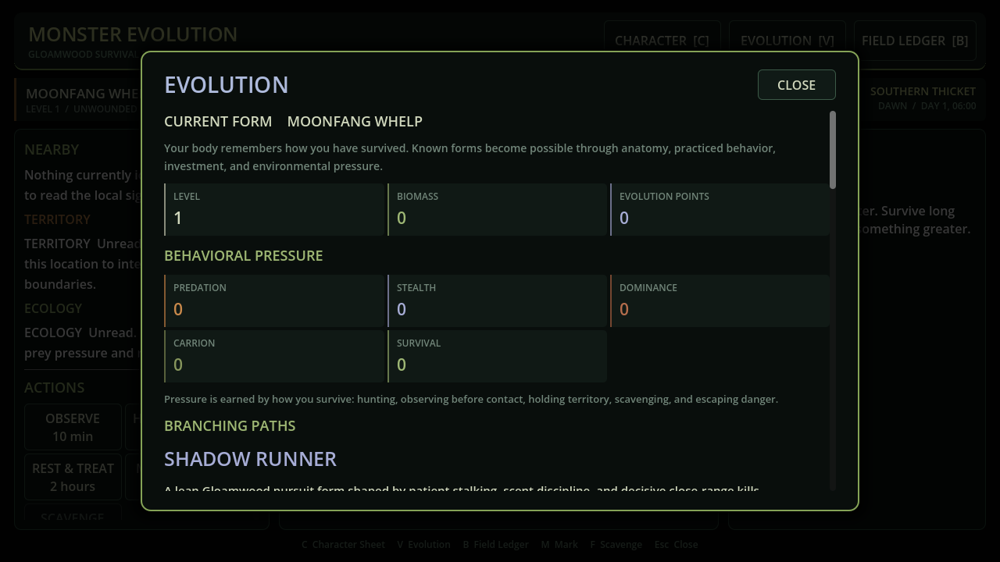

SURVIVAL SIMULATION · PROTOTYPE
Monster Evolution
Survive as part of an ecosystem, then evolve through the pressures of the world around you.

01 / THE PROBLEM
The design challenge.
Make creatures, weather and the player operate through shared rules rather than isolated scripted encounters.
02 / THE APPROACH
How it comes together.
The C# simulation connects persistent time, weather, ecology, anatomy, needs and utility AI. Species profiles describe capabilities and habitat fit, while the interface makes the resulting decisions inspectable.
- Hunger, wounds, fatigue and thermal physiology affect survival.
- Evolution pressure and branching forms build on learned skills.
- Persistent rivals, shelters and world events survive through versioned saves.

03 / CURRENT STATE
A clear view of the work.
A systems-heavy prototype in active development. The roadmap explicitly defers an optional LLM layer.